35. Exercice d’application : version 15
35.1. Introduction
Cette version vise à résoudre des problèmes liés au rafraîchissement des pages de l’application dans le navigateur (F5). Prenons un exemple. L’utilisateur vient de suprimer la simulation d’id=3 :
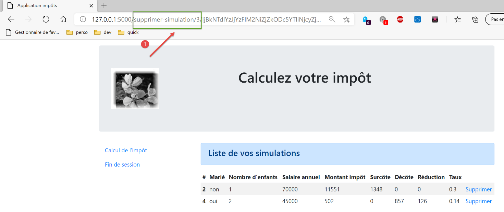
Après la suppression l’URL dans le navigateur est [/supprimer-simulation/3/…]. Si l’utilisateur rafraîchit la page (F5), l’URL [1] est rejouée. On demande donc de nouveau la suppression de la simulation d’id=3. Le résultat est alors le suivant :
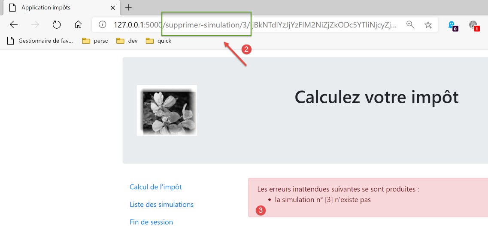
Voici un autre exemple. L’utilisateur vient de calculer un impôt :
- en [1], l’URL [/calculer-impot] qui vient d’être interrogée avec un POST ;
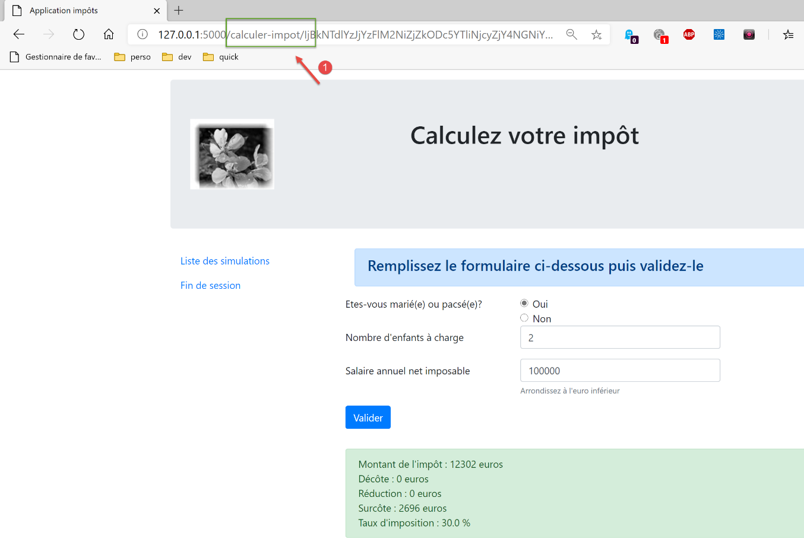
Si l’utilisateur rafraîchit la page (F5), il obtient un message d’avertissement :
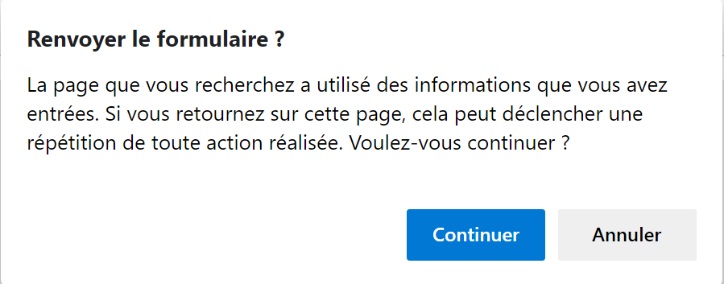
L’opération de rafraîchissement de page rejoue la dernière requête exécutée par le navigateur, ici un [POST /calculer-impot]. Lorsqu’on demande à rejouer un POST, les navigateurs émettent un avertissement analogue à celui ci-dessus. Celui-ci avertit qu’il est en train de rejouer une action déjà faite. Supposons que ce POST ait effectué un achat, il serait malheureux de refaire celui-ci.
Par ailleurs, nous allons limiter la possibilité de l’utilisateur de taper des URL dans son navigateur. Prenons par exemple l’une des vues précédentes :
Les liens offerts par cette page sont :
- [Liste des simulations] associé à l’URL [/lister-simulations] ;
- [Fin de session] associé à l’URL [/fin-session] ;
- [Valider] associé à l’URL (on ne la voit pas ci-dessus) [/calculer-impot] ;
Lorsque la vue du calcul de l’impôt sera affichée, nous n’accepterons que les actions [/lister-simulations, /fin-session, /calculer-impot]. Si l’utilisateur tape une autre action dans son navigateur, une erreur sera déclarée. On fera ce type de vérification pour les quatre vues de l’application.
Nous nous proposons de résoudre le problème du rafraîchissement des pages de la façon suivante :
- nous allons distinguer deux types d’actions :
- les actions ADS (Action Do Something) modifiant l’état de l’application. Les actions ADS ont en général des paramètres dans l’URL ou le corps de la requête ;
- les actions ASV (Action Show View) affichant une vue sans modifier l’état de l’application. Il y aura autant d’actions ASV que de vues V. Les actions ASV n’ont aucun paramètre ;
- les actions ADS jusqu’à maintenant s’exécutaient puis se terminaient par l’affichage d’une vue V après avoir préparé le modèle M de celle-ci. Désormais, elles mettront le modèle M de la vue en session et demanderont au navigateur de se rediriger vers l’action ASV chargée d’afficher la vue V ;
- les vues V ne seront affichées qu’à l’issue d’une action ASV. Elles prendront leur modèle dans la session ;
L’intérêt de cette méthode est que le navigateur affichera l’URL ASV dans son champ d’adresse. Le rafraîchissement de la page rejouera alors l’action ASV. Celle-ci ne modifie pas l’état de l’application et utilise un modèle en session. Donc la même page sera réaffichée sans effets de bord. Finalement, à cause des redirections, l’utilisateur ne verra que des URL d’actions ASV dans son navigateur et aura l’impression de naviguer de page en page ;
35.2. Implémentation
Le dossier [impots/http-servers/10] est obtenu initialement par recopie du dossier [impots/http-servers/09]. Il est ensuite modifié.
35.2.1. Les nouvelles routes
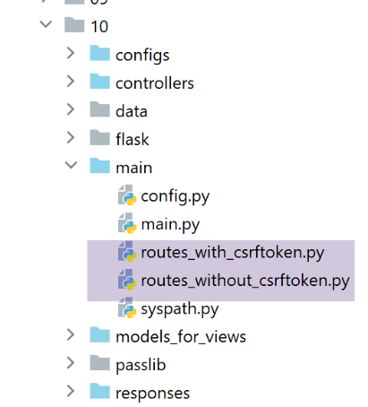
Dans les deux fichiers [routes_with_csrftoken] et [routes_without_csrftoken], il nous faut créer les quatre routes des quatre actions ASV qui affichent les quatre vues. Les autres routes restent à l’identique.
Dans [routes_with_csrftoken] :
| # afficher-vue-calcul-impot
@app.route('/afficher-vue-calcul-impot/<string:csrf_token>', methods=['GET'])
def afficher_vue_calcul_impot(csrf_token: str) -> tuple:
# on exécute le contrôleur associé à l'action
return front_controller()
# afficher-vue-authentification
@app.route('/afficher-vue-authentification/<string:csrf_token>', methods=['GET'])
def afficher_vue_authentification(csrf_token: str) -> tuple:
# on exécute le contrôleur associé à l'action
return front_controller()
# afficher-vue-liste-simulations
@app.route('/afficher-vue-liste-simulations/<string:csrf_token>', methods=['GET'])
def afficher_vue_liste_simulations(csrf_token: str) -> tuple:
# on exécute le contrôleur associé à l'action
return front_controller()
# afficher-vue-liste_erreurs
@app.route('/afficher-vue-liste-erreurs/<string:csrf_token>', methods=['GET'])
def afficher_vue_liste_erreurs(csrf_token: str) -> tuple:
# on exécute le contrôleur associé à l'action
return front_controller()
|
Lignes 1-23, nous avons créé quatre routes pour quatre actions ASV :
- [/afficher-vue-authentification], ligne 8, affiche la vue d’authentification ;
- [/afficher-vue-calcul-impot], ligne 2, affiche la vue du calcul de l’impôt ;
- [/afficher-vue-liste-simulations], ligne 14, affiche la vue des simulations ;
- [/afficher-vue-liste-erreurs], ligne 20, affiche la vue des erreurs inattendues ;
On fait de même dans le fichier [routes_with_csrftoken] des routes sans jeton :
| # routes ASV -------------------------
# afficher-vue-calcul-impot
@app.route('/afficher-vue-calcul-impot', methods=['GET'])
def afficher_vue_calcul_impot() -> tuple:
# on exécute le contrôleur associé à l'action
return front_controller()
# afficher-vue-authentification
@app.route('/afficher-vue-authentification', methods=['GET'])
def afficher_vue_authentification() -> tuple:
# on exécute le contrôleur associé à l'action
return front_controller()
# afficher-vue-liste-simulations
@app.route('/afficher-vue-liste-simulations', methods=['GET'])
def afficher_vue_liste_simulations() -> tuple:
# on exécute le contrôleur associé à l'action
return front_controller()
# afficher-vue-liste_erreurs
@app.route('/afficher-vue-liste-erreurs', methods=['GET'])
def afficher_vue_liste_erreurs() -> tuple:
# on exécute le contrôleur associé à l'action
return front_controller()
|
35.2.2. Les nouveaux contrôleurs
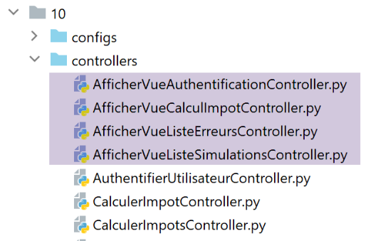
Le contrôleur [AfficherVueAuthentificationController] exécute l’action ASV [/afficher-vue-authentification] :
| from flask_api import status
from werkzeug.local import LocalProxy
from InterfaceController import InterfaceController
class AfficherVueAuthentificationController(InterfaceController):
def execute(self, request: LocalProxy, session: LocalProxy, config: dict) -> (dict, int):
# on récupère les éléments du path
params = request.path.split('/')
action = params[1]
# changement de vue - juste un code d'état à positionner
return {"action": action, "état": 1100, "réponse": ""}, status.HTTP_200_OK
|
On a dit que les actions ASV n’avaient aucun paramètre et ne modifiaient pas l’état de l’application. On se contente d’afficher la vue souhaitée en positionnant, ligne 14, un code d’état.
Le contrôleur [AfficherVueCalculImpotController] exécute l’action ASV [/afficher-vue-calcul-impot] :
| from flask_api import status
from werkzeug.local import LocalProxy
from InterfaceController import InterfaceController
class AfficherVueCalculImpotController(InterfaceController):
def execute(self, request: LocalProxy, session: LocalProxy, config: dict) -> (dict, int):
# on récupère les éléments du path
params = request.path.split('/')
action = params[1]
# changement de vue - juste un code d'état à positionner
return {"action": action, "état": 1400, "réponse": ""}, status.HTTP_200_OK
|
Le contrôleur [AfficherVueListeSimulationsController] exécute l’action ASV [/afficher-vue-liste-simulations] :
| from flask_api import status
from werkzeug.local import LocalProxy
from InterfaceController import InterfaceController
class AfficherVueListeSimulationsController(InterfaceController):
def execute(self, request: LocalProxy, session: LocalProxy, config: dict) -> (dict, int):
# on récupère les éléments du path
params = request.path.split('/')
action = params[1]
# changement de vue - juste un code d'état à positionner
return {"action": action, "état": 1200, "réponse": ""}, status.HTTP_200_OK
|
Le contrôleur [AfficherVueListeErreursController] exécute l’action ASV [/afficher-vue-liste-erreurs] :
| from flask_api import status
from werkzeug.local import LocalProxy
from InterfaceController import InterfaceController
class AfficherVueListeErreursController(InterfaceController):
def execute(self, request: LocalProxy, session: LocalProxy, config: dict) -> (dict, int):
# on récupère les éléments du path
params = request.path.split('/')
action = params[1]
# changement de vue - juste un code d'état à positionner
return {"action": action, "état": 1300, "réponse": ""}, status.HTTP_200_OK
|
Résumons les codes d’état :
- le code 1100 doit afficher la vue d’authentification ;
- le code 1400 doit afficher la vue du calcul de l’impôt ;
- le code 1200 doit afficher la vue des simulations ;
- le code 1300 doit afficher la vue des erreurs inattendues ;
35.2.3. La nouvelle configuration MVC
Parce qu’elle devenait trop importante, la configuration MVC a été éclatée sur quatre fichiers :
- [controllers] : la liste des contrôleurs C de l’application MVC ;
- [ads_actions] : liste les actions ADS (Action Do Something) ;
- [asv_actions] : liste les actions ASV (Action Show View) ;
- [responses] : liste les classes des réponses HTTP de l’application ;
Commençons par le plus simple, le fichier des réponses HTTP [responses] :
| def configure(config: dict) -> dict:
# configuration de l'application MVC
# les réponses HTTP
from HtmlResponse import HtmlResponse
from JsonResponse import JsonResponse
from XmlResponse import XmlResponse
# les différents types de réponse (json, xml, html)
responses = {
"json": JsonResponse(),
"html": HtmlResponse(),
"xml": XmlResponse()
}
# on rend le dictionnaire des réponses HTTP
return {
# réponses HTTP
"responses": responses,
}
|
Pas de surprise.
Le fichier [controllers] des contrôleurs est également sans surprise. On y a simplement ajouté les nouveaux contrôleurs des actions ASV.
| def configure(config: dict) -> dict:
# configuration de l'application MVC
# le contrôleur principal
from MainController import MainController
# les contrôleurs d'actions ADS
from AuthentifierUtilisateurController import AuthentifierUtilisateurController
from CalculerImpotController import CalculerImpotController
from CalculerImpotsController import CalculerImpotsController
from FinSessionController import FinSessionController
from GetAdminDataController import GetAdminDataController
from InitSessionController import InitSessionController
from ListerSimulationsController import ListerSimulationsController
from SupprimerSimulationController import SupprimerSimulationController
from AfficherCalculImpotController import AfficherCalculImpotController
# les contrôleurs d'actions ASV
from AfficherVueCalculImpotController import AfficherVueCalculImpotController
from AfficherVueAuthentificationController import AfficherVueAuthentificationController
from AfficherVueListeErreursController import AfficherVueListeErreursController
from AfficherVueListeSimulationsController import AfficherVueListeSimulationsController
# actions autorisées et leurs contrôleurs
controllers = {
# initialisation d'une session de calcul
"init-session": InitSessionController(),
# authentification d'un utilisateur
"authentifier-utilisateur": AuthentifierUtilisateurController(),
# lien vers vue calcul impot
"afficher-calcul-impot": AfficherCalculImpotController(),
# calcul de l'impôt en mode individuel
"calculer-impot": CalculerImpotController(),
# calcul de l'impôt en mode lots
"calculer-impots": CalculerImpotsController(),
# liste des simulations
"lister-simulations": ListerSimulationsController(),
# suppression d'une simulation
"supprimer-simulation": SupprimerSimulationController(),
# fin de la session de calcul
"fin-session": FinSessionController(),
# obtention des données de l'administration fiscale
"get-admindata": GetAdminDataController(),
# main controller
"main-controller": MainController(),
# affichage de la vue d'authentification
"afficher-vue-authentification": AfficherVueAuthentificationController(),
# affichage de la vue de calcul de l'impôt
"afficher-vue-calcul-impot": AfficherVueCalculImpotController(),
# affichage de la vue des simulations
"afficher-vue-liste-simulations": AfficherVueListeSimulationsController(),
# affichage de la vue des erreurs
"afficher-vue-liste-erreurs": AfficherVueListeErreursController()
}
# on rend la configuration des contrôeleurs
return {
# contrôleurs
"controllers": controllers,
}
|
La configuration [asv_actions] des actions ASV est la suivante :
| def configure(config: dict) -> dict:
# configuration de l'application MVC
# les vues HTML et leurs modèles dépendent de l'état rendu par le contrôleur
# actions ASV (Action Show view)
asv = [
{
# vue d'authentification
"états": [
1100, # /afficher-vue-authentification
],
"view_name": "views/vue-authentification.html",
},
{
# vue du calcul de l'impôt
"états": [
1400, # /afficher-vue-calcul-impot
],
"view_name": "views/vue-calcul-impot.html",
},
{
# vue de la liste des simulations
"états": [
1200, # /afficher-vue-liste-simulations
],
"view_name": "views/vue-liste-simulations.html",
},
{
# vue de la liste des erreurs
"états": [
1300, # /afficher-vue-liste-erreurs
],
"view_name": "views/vue-erreurs.html",
},
]
# on rend la configuration ASV
return {
# vues et modèles
"asv": asv,
}
|
- le fichier [asv_actions] rassemble les quatre nouvelles actions dont on rappelle le fonctionnement :
- elles n’ont aucun paramètre ;
- elles affichent une vue précise dont le modèle est en session ;
- la liste [asv] des lignes 6-35, associent une vue à chaque action ASV ;
Le fichier [ads_actions] rassemble les actions ADS :
| def configure(config: dict) -> dict:
# configuration de l'application MVC
# les modèles des vues
from ModelForAuthentificationView import ModelForAuthentificationView
from ModelForCalculImpotView import ModelForCalculImpotView
from ModelForErreursView import ModelForErreursView
from ModelForListeSimulationsView import ModelForListeSimulationsView
# actions ADS (Action Do Something)
ads = [
{
"états": [
400, # /fin-session réussite
],
# redirection vers action ADS
"to": "/init-session/html",
},
{
"états": [
700, # /init-session - succès
201, # /authentifier-utilisateur échec
],
# redirection vers action ASV
"to": "/afficher-vue-authentification",
# modèle de la vue suivante
"model_for_view": ModelForAuthentificationView()
},
{
"états": [
200, # /authentifier-utilisateur réussite
300, # /calculer-impot réussite
301, # /calculer-impot échec
800, # /afficher-calcul-impot lien
],
# redirection vers action ASV
"to": "/afficher-vue-calcul-impot",
# modèle de la vue suivante
"model_for_view": ModelForCalculImpotView()
},
{
"états": [
500, # /lister-simulations réussite
600, # /supprimer-simulation réussite
],
# redirection vers action ASV
"to": "/afficher-vue-liste-simulations",
# modèle de la vue suivante
"model_for_view": ModelForListeSimulationsView()
},
]
# vue des erreurs inattendues
view_erreurs = {
# redirection vers action ASV
"to": "/afficher-vue-liste-erreurs",
# modèle de la vue suivante
"model_for_view": ModelForErreursView()
}
# on rend la configuration MVC
return {
# actions ADS
"ads": ads,
# la vue des erreurs inattendues
"view_erreurs": view_erreurs,
}
|
- lignes 11-51 : la liste des actions ADS (Action Do Something). On retrouve toutes les actions des versions précédentes. Leur fonctionnement a cependant changé :
- elles n’affichent pas une vue V. Elles préparent seulement le modèle M de cette vue V ;
- elles demandent l’affichage de la vue V via une redirection vers l’action ASV associée à la vue V ;
- les actions ADS ne mènent pas toutes à une redirection vers une action ASV : lignes 12-18, l’action ADS [/fin-session] mène à une redirection vers l’action ADS [/init-session/html]. Pour distinguer les redirections ADS -> ADS et ADS -> ASV, on peut s’aider du modèle [model_for_view]. Celui-ci n’existe pas pour les redirections ADS -> ADS ;
Le fichier [main/config] qui rassemble toutes les configurations évolue comme suit :
| def configure(config: dict) -> dict:
# configuration du syspath
import syspath
config['syspath'] = syspath.configure(config)
# paramétrage de l'application
import parameters
config['parameters'] = parameters.configure(config)
# configuration de la base de données
import database
config["database"] = database.configure(config)
# instanciation des couches de l'application
import layers
config['layers'] = layers.configure(config)
# configuration MVC de la couche [web]
config['mvc'] = {}
# configuration des contrôleurs de la couche [web]
import controllers
config['mvc'].update(controllers.configure(config))
# actions ASV (Action Show View)
import asv_actions
config['mvc'].update(asv_actions.configure(config))
# actions ADS (Action Do Something)
import ads_actions
config['mvc'].update(ads_actions.configure(config))
# configuration des réponses HTTP
import responses
config['mvc'].update(responses.configure(config))
# on rend la configuration
return config
|
35.2.4. Les nouveaux modèles
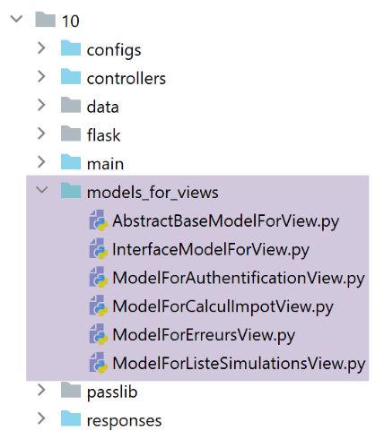
Les modèles vont générer une nouvelle information. Prenons par exemple, le modèle de la vue d’authentification :
| from flask import Request
from werkzeug.local import LocalProxy
from AbstractBaseModelForView import AbstractBaseModelForView
class ModelForAuthentificationView(AbstractBaseModelForView):
def get_model_for_view(self, request: Request, session: LocalProxy, config: dict, résultat: dict) -> dict:
# on encapsule les données de la pagé dans modèle
modèle = {}
…
# jeton csrf
modèle['csrf_token'] = super().get_csrftoken(config)
# actions possibles à partir de la vue
modèle['actions_possibles'] = ["afficher-vue-authentification", "authentifier-utilisateur"]
# on rend le modèle
return modèle
|
- la nouveauté est ligne 17 : chaque modèle va générer une liste d’actions possibles lorsque la vue V dont il est le modèle M va s’afficher. Pour connaître ces actions, il faut revenir à la vue V. Dans le cas de la vue d’authentification :
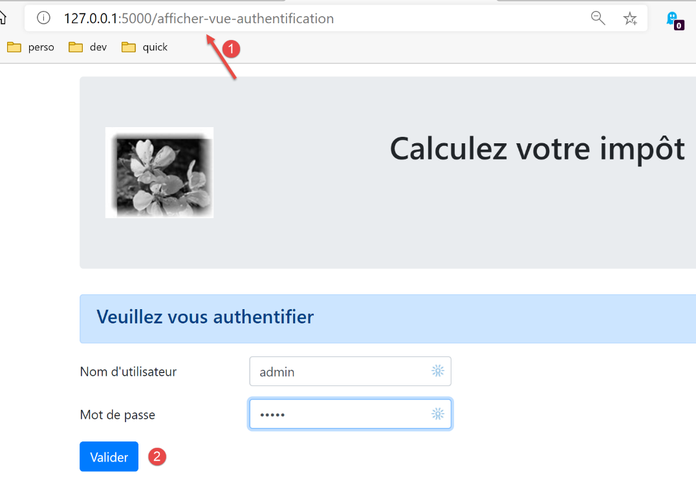
- on voit que la vue d’authentification n’offre qu’une action, celle du bouton [Valider]. Cette action est [/authentifier-utilisateur] ;
On a écrit :
| # actions possibles à partir de la vue
modèle['actions_possibles'] = ["afficher-vue-authentification", "authentifier-utilisateur"]
|
Sur la vue ci-dessus, on voit que si l’utilisateur rafraîchit la vue, l’action [1] [/afficher-vue-authentification] va être rejouée. Il faut donc qu’elle soit autorisée. On n’aurait pu ne pas l’autoriser auquel cas l’utilisateur aurait une erreur à chaque fois qu’il rechargerait la page. On a estimé que ce n’était pas souhaitable.
Les actions possibles sont mis dans le modèle de la vue. On sait que ce modèle va être mis en session.
On fait cela pour chacune des quatre vues. Les actions possibles sont alors les suivantes :
Vue d’authentification
| modèle['actions_possibles'] = ["afficher-vue-authentification", "authentifier-utilisateur"]
|
Vue du calcul de l’impôt
| # actions possibles à partir de la vue
modèle['actions_possibles'] = ["afficher-vue-calcul-impot", "calculer-impot", "lister-simulations","fin-session"]
|
Vue de la liste des simulations
| # actions possibles à partir de la vue
actions_possibles = ["afficher-vue-liste-simulations", "afficher-calcul-impot", "fin-session"]
if len(modèle['simulations']) != 0:
actions_possibles.append("supprimer-simulation")
modèle['actions_possibles'] = actions_possibles
|
Vue de la liste des erreurs
| # actions possibles à partir de la vue
modèle['actions_possibles'] = ["afficher-vue-liste-erreurs", "afficher-calcul-impot", "lister-simulations", "fin-session"]
|
35.2.5. Le nouveau contrôleur principal
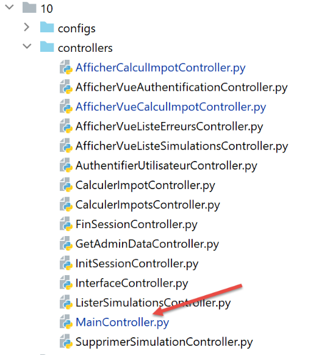
Le contrôleur [MainController] subit quelques modifications :
| # import des dépendances
import threading
import time
from random import randint
from flask_api import status
from flask_wtf.csrf import generate_csrf, validate_csrf
from werkzeug.local import LocalProxy
from wtforms import ValidationError
from InterfaceController import InterfaceController
from Logger import Logger
from SendAdminMail import SendAdminMail
def send_adminmail(config: dict, message: str):
# on envoie un mail à l'administrateur de l'application
config_mail = config['parameters']['adminMail']
config_mail["logger"] = config['logger']
SendAdminMail.send(config_mail, message)
# contrôleur principal de l'application
class MainController(InterfaceController):
def execute(self, request: LocalProxy, session: LocalProxy, config: dict) -> (dict, int):
# on traite la requête
type_response1 = None
logger = None
try:
# on récupère les éléments du path
params = request.path.split('/')
# l'action est le 1er élément
action = params[1]
# logger
logger = Logger(config['parameters']['logsFilename'])
…
# l'action /afficher-vue-liste-erreurs est particulière
# on ne fait aucune vérification, sinon on risque d'entrer dans une boucle infinie de redirections
erreur = False
if action != "afficher-vue-liste-erreurs":
# si erreur, (résultat] est le résultat à envoyer au client
(erreur, résultat, type_response1) = MainController.check_action(params, session, config)
# si pas d'erreur - l'action est exécutée
if not erreur:
# on exécute le contrôleur associé à l'action
controller = config['mvc']['controllers'][action]
résultat, status_code = controller.execute(request, session, config)
except BaseException as exception:
# exceptions (inattendues)
résultat = {"action": action, "état": 131, "réponse": [f"{exception}"]}
erreur = True
finally:
pass
# erreur d'exécution
if erreur:
# requête erronée
status_code = status.HTTP_400_BAD_REQUEST
if config['parameters']['with_csrftoken']:
# on ajoute le csrf_token au résultat
résultat['csrf_token'] = generate_csrf()
….
# on envoie la réponse HTTP
return response, status_code
@staticmethod
def check_action(params: list, session: LocalProxy, config: dict) -> (bool, dict, str):
…
# résultat de la méthode
return erreur, résultat, type_response1
|
35.2.6. La nouvelle réponse HTML
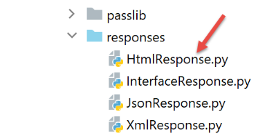
Les modifications en cours ne concernent que les sessions HTML. Les sessions jSON ou XML ne sont pas impactées. La classe [HtmlResponse] évolue de la façon suivante :
| # dépendances
from flask import make_response, redirect, render_template
from flask.wrappers import Response
from flask_api import status
from flask_wtf.csrf import generate_csrf
from werkzeug.local import LocalProxy
from InterfaceResponse import InterfaceResponse
class HtmlResponse(InterfaceResponse):
def build_http_response(self, request: LocalProxy, session: LocalProxy, config: dict, status_code: int,
résultat: dict) -> (Response, int):
# la réponse HTML dépend du code d'état rendu par le contrôleur
état = résultat["état"]
# on cherche si l'état a été produit par une action ASV
# auquel cas, il faut afficher une vue
asv_configs = config['mvc']["asv"]
trouvé = False
i = 0
# on parcourt la liste des vues
nb_views = len(asv_configs)
while not trouvé and i < nb_views:
# vue n° i
asv_config = asv_configs[i]
# états associés à la vue n° i
états = asv_config["états"]
# est-ce que l'état cherché se trouve dans les états associés à la vue n° i
if état in états:
trouvé = True
else:
# vue suivante
i += 1
# trouvé ?
if trouvé:
# il s'agit d'une action ASV - il faut afficher une vue dont le modèle est déjà en session
# on génère le code HTML de la réponse
html = render_template(asv_config["view_name"], modèle=session['modèle'])
# on construit la réponse HTTP
response = make_response(html)
response.headers['Content-Type'] = 'text/html; charset=utf-8'
# on rend le résultat
return response, status_code
# pas trouvé - il s'agit d'un code d'état d'une action ADS
# celle-ci va être suivie d'une redirection
redirected = False
for ads in config['mvc']['ads']:
# états nécessitant une redirection
états = ads["états"]
if état in états:
# il y a redirection
redirected = True
break
# dictionnaire de redirection pour le cas des erreurs inattendues
if not redirected:
ads = config['mvc']['view_erreurs']
# est-ce une redirection vers une action ASD ou ASV ?
# s'il y a un modèle, alors il s'agit d'une redirection vers une action ASV
# il faut alors calculer le modèle de la vue V qui sera affichée par l'action ASV
model_for_view = ads.get("model_for_view")
if model_for_view:
# calcul du modèle de la vue suivante
modèle = model_for_view.get_model_for_view(request, session, config, résultat)
# le modèle est mis en session pour la vue suivante
session['modèle'] = modèle
# maintenant il faut générer l'URL de redirection sans oublier le jeton CSRF s'il est demandé
if config['parameters']['with_csrftoken']:
csrf_token = f"/{generate_csrf()}"
else:
csrf_token = ""
# réponse de redirection
return redirect(f"{ads['to']}{csrf_token}"), status.HTTP_302_FOUND
|
- lignes 18-35 : on cherche si l’état produit par la dernière action exécutée est celui d’une action ASV ;
- lignes 36-46 : si oui, la vue V associée à l’action ASV est affichée avec pour modèle le modèle trouvé en session associé à la clé [‘modèle’] ;
- lignes 48-60 : lorsqu’on arrive là, on sait que l’état produit par la dernière action exécutée est celui d’une action ADS. Il va alors provoquer une redirection. On cherche dans le fichier de configuration, la définition de celle-ci ;
- ligne 62 : lorsqu’on est là, on a la configuration de la redirection à faire. Il y a deux cas :
- il s’agit d’une redirection vers une autre action ADS. Il n’y a alors pas de modèle de vue à calculer ;
- il s’agit d’une redirection vers une action ASV. Il y a alors un modèle de vue à calculer (lignes 67-68). Ce modèle est ensuite mis en session (ligne 70) ;
- lignes 72-76 : on calcule l’URL de redirection ;
- lignes 78-79 : on envoie la réponse de redirection au client ;
35.3. Tests
Faites les tests suivants avec un navigateur :
- utilisez normalement l’application. Vérifiez que les seules URL affichées par le navigateur sont des URL ASV [/afficher-vue-nom_de_la_vue] ;
- rafraîchissez les pages (F5) et constatez que la même page se réaffiche alors. Il n’y a aucun effet de bord ;
Par ailleurs, utilisez le client [impots/http-clients/09]. Comme les modifications faites concernent uniquement les sessions HTML, les clients [main, main2, main3, Test1HttpClientDaoWithSession, Test2HttpClientDaoWithSession] doivent continuer à fonctionner.
Maintenant voyons un cas d’action impossible. La vue suivante est affichée :
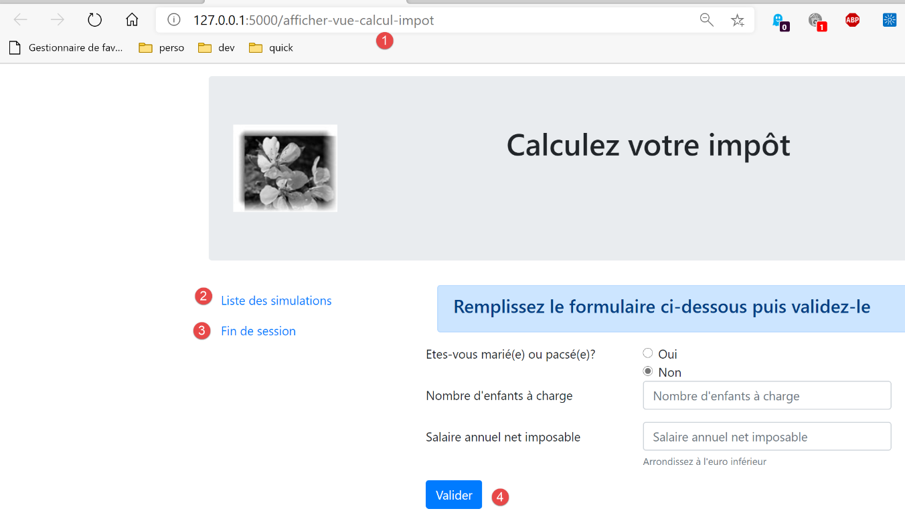
A la place de [1], on tape l’URL [/supprimer-simulation/1]. L’action [/supprimer-simulation] ne fait pas partie des actions proposées par la vue qui sont les actions 1-4. Elle va donc être refusée. La réponse du serveur est la suivante :
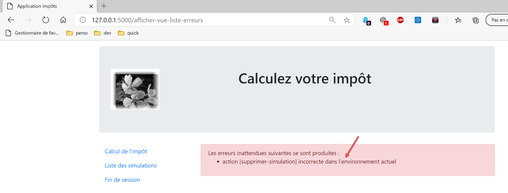